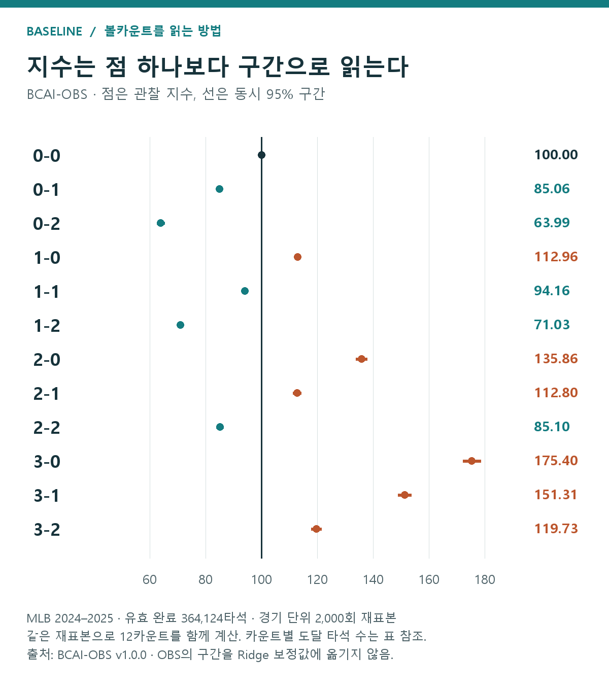
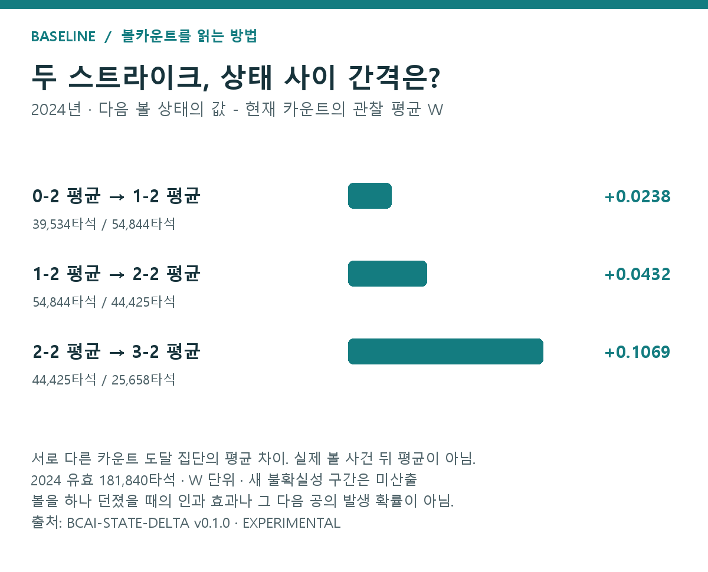

BCAI 해설 — 0-2의 불리함과 3-0의 유리함을 숫자로 읽는 법
이 글의 목차 — 결과·방법·해석
- 1. 주 결과 — 열두 카운트의 공격가치
- 보조 결과 — 선수·상황 보정 뒤에도 큰 모양은 유지됐다
- 2. 보조 결과 — 볼이 하나 더 있는 상태의 평균 차이
- 표의 한 행을 천천히 읽어 보기
- 3. 계산의 재료 — 타석 결과에 W 붙이기
- 타석 하나에 점수를 붙이는 단계
- 4. 계산의 분모 — 그 카운트를 거친 타석 모으기
- 한 타석을 처음부터 끝까지 따라가 보기
- 어떤 기록을 계산에 남겼을까?
- 5. 지수 계산 — 시작 평균을 100으로 맞추기
- 두 해를 합칠 때도 같은 기준을 쓰기
- 6. 불확실성 — 작은 차이에 등수를 붙이지 않기
- 왜 타석 하나씩이 아니라 경기째 다시 뽑을까?
- 두 점의 차이는 차이 자체의 구간으로 보기
- 7. 보조 보정 — 선수·상황 차이에 대한 민감도
- 보정한 뒤에는 무엇을 비교할까?
- 8. 시행착오 — 분모와 수렴, 외부 자료 확인
- 분모를 고친 이유
- 계산이 안정됐는지 다시 확인한 이유
- 다른 연도 자료를 열기 전에 확인한 것
- 9. 적용 범위 — 다음 공의 선택은 BCAP에서 비교
- 자료와 계산 근거
Baseline 볼카운트 연재 ② · 2026년 9월 18일 검토용 원고
BCAI에서 0-2는 63.99, 3-0은 175.40이었다. 타석 시작 평균 100에 비해 전자는 공격가치가 낮고 후자는 높았다. 1-1은 94.16, 풀카운트 3-2는 119.73이었다. 먼저 전체 결과와 뜻을 읽고, 그다음 이 값을 만든 타석·가중치·계산을 설명한다.
카운트의 형편을 읽기 쉬운 숫자로 정리한 지표가 BCAI, Ball Count Advantage Index다. 우리말로는 볼카운트 유불리 지수다. 이 연재에서 자체적으로 정의한 지수이며, 해당 카운트를 거친 타석들의 최종 공격가치를 타석 시작 평균과 비교한다.
이 글의 W는 볼넷·안타·장타 등에 가중치를 붙인 최종 타석의 공격가치다. 그 평균을 타석 시작점과 비교해 지수로 만든다.
읽는 기준은 하나다. 타석 시작 평균을 100으로 놓고, 높으면 타자에게 유리한 방향, 낮으면 투수에게 유리한 방향으로 읽는다. 100은 타자와 투수의 승률이 반반이라는 뜻이 아니다.
읽는 순서: 결과 요약 → 결과표·그림 → 계산 방법 → 이유와 해석 범위. 청록색은 자체 분석 결과, 보라색은 참고문헌, 갈색은 해석 메모다. 큰 제목은 주제, 작은 제목은 그 안의 설명 단계다.
1. 주 결과 — 열두 카운트의 공격가치
먼저 그림의 100 기준선을 찾자. 각 점이 어느 쪽에 놓였는지 보면 시작 평균에 비해 높았는지 낮았는지 알 수 있다. 그다음 점에서 뻗은 선을 보자. 같은 자료 생성 환경에서 관찰값이 흔들릴 수 있다는 점을 함께 보여주는 구간이다. 숫자표는 그 그림을 정확한 값과 타석 수로 풀어 놓았다.

그림 1. MLB 2024·2025, 유효 364,124타석·4,859경기. 점은 관찰 지수, 선은 동시 95% 구간. 각 카운트의 분모는 해당 카운트를 거친 고유 타석이며 아래 표에 표시했다. 출처: BCAI-OBS 저장 결과.[1]
표 1. MLB 2024·2025 카운트별 BCAI와 도달 타석 수
| 카운트 | 도달 타석 | BCAI | 동시 95% 구간 |
|---|---|---|---|
| 0-0 | 364,124 | 100.00 | 기준점 |
| 0-1 | 184,704 | 85.06 | 84.30~85.82 |
| 0-2 | 78,453 | 63.99 | 62.70~65.28 |
| 1-0 | 136,551 | 112.96 | 111.96~113.96 |
| 1-1 | 142,616 | 94.16 | 93.22~95.10 |
| 1-2 | 109,346 | 71.03 | 69.94~72.12 |
| 2-0 | 45,648 | 135.86 | 133.87~137.85 |
| 2-1 | 72,967 | 112.80 | 111.28~114.31 |
| 2-2 | 89,054 | 85.10 | 83.84~86.36 |
| 3-0 | 13,982 | 175.40 | 172.23~178.58 |
| 3-1 | 29,886 | 151.31 | 148.93~153.68 |
| 3-2 | 51,406 | 119.73 | 117.96~121.49 |
단위: 지수 포인트, 타석. 시작 평균=100. 같은 타석은 서로 다른 카운트에 포함될 수 있으므로 타석 수를 합산하지 않는다. 구간은 11개 비기준 카운트를 함께 살피도록 계산한 동시 구간이다. 출처: BCAI-OBS-v1.0.0 저장 결과.[1]
3-0이 가장 높고 0-2가 가장 낮다. 풀카운트 3-2도 119.73으로, 시작 평균보다 타자 쪽의 공격가치가 높았다. 삼진과 볼넷이 모두 한 구 앞으로 다가왔다는 사실이 두 결과의 확률과 가치를 대칭으로 만들지는 않는다.
특히 3-0의 높은 값은 안타만 보면 이해하기 어렵다. 3-0을 거친 13,982타석에서 최종 안타 비중은 10.46%였지만, 비고의 볼넷 비중은 60.99%였다. 높은 공격가치에 볼넷이 크게 기여했다. 이 60.99%는 3-0 다음 공 하나에서 바로 볼넷이 나올 확률이 아니라, 3-0을 거친 타석의 최종 결과 비중이다.
또 0-1의 85.06과 2-2의 85.10은 매우 가깝다. 하지만 다음 스트라이크의 의미는 다르다. 0-1에서는 0-2로 넘어가고, 2-2에서는 보통 삼진으로 끝난다. BCAI가 비슷하다고 다음 공의 대응까지 같아지는 것은 아니다.
이처럼 BCAI는 카운트가 어떤 상황이었는지를 읽는 기준선이다. 투수용 지수를 따로 뒤집어 만들지는 않았다. 같은 공격가치를 두고 타자는 높은 쪽, 투수는 낮은 쪽을 유리하게 읽는다.
1.1보조 결과 — 선수·상황 보정 뒤에도 큰 모양은 유지됐다
현재 보조 모델에서 관찰 지수 대비 이동은 최대 약 1.61포인트였다. 예를 들어 0-2는 63.99에서 64.95로, 3-0은 175.40에서 173.79로 움직였다. 0-2가 가장 낮고 3-0이 가장 높다는 큰 모습은 유지됐다.[2]
2. 보조 결과 — 볼이 하나 더 있는 상태의 평균 차이
2024년 상태 평균의 간격은 0-2→1-2에서 +0.023798 W, 1-2→2-2에서 +0.043248 W, 2-2→3-2에서 +0.106880 W였다. 서로 다른 도달 타석 집단의 평균 차이를 보여주는 보조 결과다.
카운트별 평균을 만든 뒤에는 “0-2에서 볼이 하나 늘어난 상태와 2-2에서 볼이 하나 늘어난 상태의 차이는 얼마나 다를까?”라는 질문이 남았다. 이를 읽기 쉽게 하기 위해 9월 17일 상태 평균 차이표를 덧붙였다.
여기서는 100 기준 지수 대신, 각 시즌의 원래 평균 W를 사용한다. 아래는 2024년의 세 가지 비교다.

그림 2. 실제 한 공의 효과가 아닌, 서로 다른 카운트 도달 집단의 관찰 평균 차이. 단위 W, 새 차이의 신뢰구간 미산출. 카운트별 분모는 표 2에 함께 적었다. 출처: BCAI-STATE-DELTA 저장 결과.[3]
표 2. 볼이 하나 더 있는 카운트와의 관찰 평균 차이 — MLB 2024
| 비교할 카운트 | 앞 카운트 평균 W | 뒤 카운트 평균 W | 뒤−앞 |
|---|---|---|---|
| 0-2 → 1-2 | 0.197938 | 0.221736 | +0.023798 |
| 1-2 → 2-2 | 0.221736 | 0.264984 | +0.043248 |
| 2-2 → 3-2 | 0.264984 | 0.371864 | +0.106880 |
분모는 각 카운트의 전체 도달 타석이다. 0-2 39,534개, 1-2 54,844개, 2-2 44,425개, 3-2 25,658개. 화살표는 비교할 상태를 연결한 것이며 실제 그 순서로 이동한 타석만 모은 표가 아니다. 단위 W, 새 차이의 신뢰구간 미산출. 출처: BCAI-STATE-DELTA 저장 결과.[3]
2.1표의 한 행을 천천히 읽어 보기
각 행은 서로 다른 두 카운트 도달 집단의 평균을 뺀 값이다.
첫 행의 왼쪽 평균은 0-2에 도달한 타석들을 모아 얻었다. 오른쪽 평균은 1-2에 도달한 타석들을 새로 모아 얻었다. 같은 타석이 두 집단에 들어갈 수는 있지만 두 명단 전체가 같지는 않다. 화살표는 독자가 비교 방향을 쉽게 읽도록 붙인 기호다.
두 스트라이크가 있는 상태에서 볼이 하나 더 있는 카운트끼리 비교했을 때, 평균의 간격은 뒤쪽에서 더 컸다.
가령 1-2에 도달한 타석에는 0-2에서 볼을 골라 온 타석도 있고, 1-1에서 스트라이크를 받아 온 타석도 있다. 표에서 빼는 두 평균은 같은 타석 집단의 전후 평균이 아니다. 같은 카운트로 들어오는 선수와 경로가 섞여 있다. 실제 특정 볼 판정이 나온 타석만 따로 모은 후속 결과도 아니다.
3볼에서 다음 볼로 타석이 끝나는 가지에는 그 시즌의 볼넷 W를, 2스트라이크에서 일반 삼진으로 끝나는 가지에는 W=0을 사용했다. 보통의 2스트라이크 파울은 카운트가 유지돼 이 상태값 차이가 0이다. 이 마지막 문장이 파울의 실제 영향이 항상 0이라는 뜻은 아니다. 번트 파울·파울팁·사구 등도 보통 볼과 스트라이크의 두 가지로 억지로 합치지 않았다.
3. 계산의 재료 — 타석 결과에 W 붙이기
W는 최종 결과의 종류마다 다른 점수를 붙인 값이다. 볼넷·단타·장타의 차이를 평균 공격가치에 반영한다.
먼저 무엇을 ‘좋은 결과’로 볼지 정해야 했다. 안타만 세면 볼넷의 가치가 빠진다. 모든 출루를 똑같이 세면 단타와 홈런의 차이가 사라진다.
그래서 최종 타석 결과에 서로 다른 가중치를 붙였다. 이 값을 W, 가중 공격가치라고 부른다. 타격 결과의 상대적인 득점 기여를 반영하는 FanGraphs의 시즌별 wOBA 가중치를 기존 분석에 사용했다.
3.1타석 하나에 점수를 붙이는 단계
각 타석에 최종 결과의 가중치 하나를 붙이고, 카운트별로 모아 평균낸 값이 W다.
타자가 볼넷으로 나갔다면 볼넷 칸의 값을, 홈런을 쳤다면 홈런 칸의 값을 가져온다. 타석 하나마다 최종 결과에 맞는 점수 하나가 생기는 셈이다. 그런 다음 같은 카운트를 거친 타석들의 점수를 더하고 타석 수로 나눈다. 그렇게 얻은 값이 그 집단의 평균 W다.
예를 들어 실제 자료가 아닌 설명용 세 타석이 각각 삼진·볼넷·단타로 끝났다고 해 보자. 아래 2024년 계수로 계산하면 평균은 (0+0.689+0.882)÷3, 약 0.524 W다. 이것은 세 타석의 결과를 한 수로 요약하는 연습이다. 실제 어떤 카운트의 성적도 아니다.
표 3. 이번 계산에서 사용한 2024년 타석 결과별 W
| 최종 결과 | W |
|---|---|
| 비고의 볼넷 | 0.689 |
| 몸에 맞는 공 | 0.720 |
| 단타 | 0.882 |
| 2루타 | 1.254 |
| 3루타 | 1.590 |
| 홈런 | 2.050 |
| 삼진·기타 아웃·정의된 기타 결과 | 0 |
출처: 기존 BCAI 실행에 저장한 2024년 계수. 결과에 부여하는 계산상 가중치이며 득점 수·확률이 아니다. 표본 통계가 아닌 계수표다. 2025년에는 해당 시즌의 별도 계수를 적용했다.[1]
4. 계산의 분모 — 그 카운트를 거친 타석 모으기
BCAI는 그 카운트에서 끝난 타석이 아니라 그 카운트를 한 번이라도 거친 유효 완료 타석을 센다.
BCAI를 이해할 때 가장 중요한 구별이다.
0-2에서 끝난 타석만 모으면, 0-2 다음 공에서 안타나 아웃으로 끝난 타석을 보게 된다. 반면 0-2를 거친 타석을 모으면, 그 뒤 볼을 여러 개 골라 볼넷으로 끝난 타석도 들어온다. BCAI는 후자를 쓴다. 그 카운트에 도달한 뒤 타석이 어떻게 끝났는지가 질문이기 때문이다.
초구 종료 타율도 같은 이유로 조심해서 읽어야 한다. 초구에 끝난 타수에는 삼진이 들어갈 수 없다. 초구를 휘둘렀지만 헛스윙이나 파울이 된 타석은 계속 진행된다. 따라서 초구에 끝난 타율을 ‘초구에 휘두르는 모든 선택의 성적’으로 옮겨 읽으면 비교 대상이 달라진다.
4.1한 타석을 처음부터 끝까지 따라가 보기
한 타석은 거친 카운트마다 한 번씩 들어가고, 각 칸에는 동일한 최종 결과가 연결된다.
집계 방식을 보기 위해 다음과 같은 타석을 떠올려 보자. 실제 특정 경기의 기록이 아닌 설명용 예시다.
0-0 → 0-1 → 0-2 → 1-2 → 1-2에서 일반 파울 → 2-2 → 홈런
이 타석은 0-0, 0-1, 0-2, 1-2, 2-2의 집계에 각각 한 번 들어간다. 1-2에서 파울을 쳐 같은 카운트가 반복돼도, 1-2의 타석 수를 두 번 늘리지 않는다. 2024년 계수라면 각각의 카운트 집계에 연결되는 최종 결과는 동일한 홈런 W=2.050이다. 공마다 새로운 홈런 가치를 얻은 것도, 다섯 값을 더해 타석의 가치를 계산하는 것도 아니다.
이 때문에 12개 카운트의 타석 수를 전부 더하면 전체 타석 수보다 커진다. 한 타석이 여러 카운트를 지나가기 때문이다. 스윙률처럼 공을 분모로 세는 통계와도 다르다. 스윙률에서는 반복 파울 뒤에 던진 공도 매번 하나의 기회로 센다.
4.2어떤 기록을 계산에 남겼을까?
최종 결과를 확인할 수 있는 유효 완료 타석만 남기고, 기록 누락을 W=0으로 채우지 않았다.
타석의 마지막 결과를 써야 하므로, 끝을 확인하지 못한 타석은 계산의 출발 조건을 충족하지 못한다. 이런 기록을 낮은 성적으로 취급하면 기록 누락 자체가 공격가치를 떨어뜨린다. 반대로 제외 기준을 카운트마다 다르게 적용하면 지수 사이에 비교하기 어려운 차이가 생긴다. 먼저 유효 타석의 공통 기준을 정한 이유다.
이번 BCAI의 주 분석은 MLB 2024·2025 정규시즌의 364,124타석, 4,859경기를 사용했다. 처음 확보한 366,231타석에서 고의볼넷 1,065개, 미완료 타석 635개, 최종 결과 결측 221개, 타격방해 186개를 제외한 수다. 기록이 빠진 타석을 아웃이나 W=0으로 채우지 않았다.[1]
5. 지수 계산 — 시작 평균을 100으로 맞추기
카운트 도달 타석의 평균 W를 시작 평균 W로 나누고 100을 곱한다. 두 시즌은 각각 계산한 뒤 고정 비중으로 합친다.
한 시즌만 생각하면 계산은 간단하다.
그 카운트를 거친 타석의 평균 W ÷ 타석 시작 평균 W × 100
실제 2024년 자료에서 0-2를 거친 타석의 평균 W는 0.197938, 타석 시작 평균은 0.309432였다. 두 값을 나누고 100을 곱하면 약 63.97이다. 같은 방법으로 2025년 값을 따로 구한 뒤 두 시즌을 합쳤다.
5.1두 해를 합칠 때도 같은 기준을 쓰기
모든 카운트에 같은 시즌 비중을 적용해 연도 구성 차이를 줄였다.
평균을 합치는 방법도 선택해야 한다. 어느 카운트는 첫해의 비중이 크고, 다른 카운트는 둘째 해의 비중이 크다면, 카운트 차이에 연도 구성의 차이가 들어올 수 있다. 그래서 시즌별로 시작 평균 대비 비율을 만든 뒤, 모든 카운트에 똑같은 시즌 비중을 적용했다.
시즌을 나누는 이유는 타석 결과의 가중치와 리그 환경이 조금씩 다르기 때문이다. 이번 분석에서는 2024년 유효 시작 타석 181,840개와 2025년 182,284개의 비중, 약 49.94%와 50.06%를 사용했다. 어느 카운트를 계산하든 시즌 비중은 같게 유지했다. 카운트마다 시즌 구성이 달라져 지수까지 움직이는 일을 줄이려는 선택이다.
정확한 식을 보고 싶은 독자를 위해 쓰면 다음과 같다.
BCAI(c) = 100 × Σᵧ qᵧ × [Vᵧ(c) ÷ Vᵧ(0-0)]
Vᵧ(c)는 그 시즌의 해당 카운트 도달 타석 평균 W, qᵧ는 고정한 시즌 비중이다. Σ는 시즌별 값을 더한다는 뜻이다.
두 시즌을 합친 0-2의 BCAI는 63.99다. 출발점과 비교한 평균 가중 공격가치가 약 36.01% 낮았다고 읽는다.
6. 불확실성 — 작은 차이에 등수를 붙이지 않기
0-1과 2-2처럼 값이 가까운 카운트는 작은 점추정 차이만으로 우열을 정하지 않았다. 경기 단위 재표집으로 구간을 함께 계산했다.
85.10과 85.06 중 어느 쪽이 더 높은지는 계산기로 쉽게 답할 수 있다. 그러나 “2-2가 0-1보다 확실히 타자에게 낫다”는 주장은 다른 문제다.
6.1왜 타석 하나씩이 아니라 경기째 다시 뽑을까?
같은 경기의 타석들이 공유하는 환경을 반영하려고 경기를 묶어 재표집했다.
한 경기의 타석들은 구장이나 날씨, 상대 투수처럼 공통 환경을 가진다. 각각을 완전히 독립된 작은 실험처럼 취급하면 자료가 실제보다 풍부해 보일 수 있다. 그래서 재표집에서는 같은 경기의 타석들을 한 묶음으로 다뤘다. 다시 뽑는다는 것은 새 경기를 수집했다는 말이 아니라, 확보한 경기 묶음들을 복원추출해 지수를 다시 계산한다는 뜻이다.
이를 살피기 위해 경기를 통째로 다시 뽑는 계산을 2,000회 반복했다. 같은 경기 안의 타석들을 함께 움직여, 유사한 경기 환경에서 지수가 얼마나 흔들릴 수 있는지 살폈다. 표 1에는 12카운트를 한꺼번에 읽는 상황에 맞춘 동시 구간을 넣었다. 단일 카운트만 볼 때의 개별 구간보다 대체로 넓다.
6.2두 점의 차이는 차이 자체의 구간으로 보기
두 카운트의 차이는 그 차이를 직접 계산한 구간으로 판단했다.
표의 두 오차 막대가 겹치는지만으로 두 카운트의 차이를 판정하지는 않았다. 같은 타석이 여러 카운트에 들어가기 때문에 두 지수의 움직임도 서로 관련돼 있다. 관심 있는 두 지수를 재표집마다 직접 빼면, 두 값이 함께 흔들리는 점을 반영해 그 차이를 살펴볼 수 있다.
별도로 계산한 2-2와 0-1의 차이는 약 0.04포인트였고, 그 차이의 개별 95% 구간은 −0.95~+1.07이었다. 1-0과 2-1의 차이도 약 0.16포인트, 구간은 −0.95~+1.25였다. 작은 점추정 차이로 정확한 우열을 정할 근거가 충분하지 않았다.
‘유리’와 ‘매우 유리’를 나누는 기준도 자연법칙은 아니다. 논의 과정에서 정한 시작 평균 대비 ±5%, ±15%를 설명용 경계로 썼다. 1-1은 지수 94.16이지만 동시 구간이 95 경계를 걸친다. 그래서 원 분석에서는 ‘투수 유리/중립 경계’라고 적었다. 소수점 하나로 명확한 등급표를 만드는 것보다, 값과 구간을 함께 보여주는 편이 충실하다.
7. 보조 보정 — 선수·상황 차이에 대한 민감도
시작 선수·상황을 보정한 지수는 관찰 지수에서 최대 약 1.61포인트 이동했다. 이 보정의 역할은 주 결과가 얼마나 민감한지 살피는 것이다.
여기서 또 하나의 의문이 생긴다. 좋은 타자가 3-0에 더 자주 도달했다면, 높은 BCAI에는 카운트뿐 아니라 선수 구성의 영향도 섞여 있지 않을까?
그래서 보조 분석으로 Ridge 보정을 붙였다. 타석 시작 시점의 타자·투수, 좌우 조합, 구장, 시즌, 점수 차, 주자, 아웃, 이닝을 사용해 기본 공격가치를 예상한다. 실제 W에서 이 예상 부분을 뺀 뒤, 카운트별 모습이 얼마나 달라지는지 살피는 방식이다. 표본이 적은 선수의 효과가 지나치게 커지지 않도록 평균 쪽으로 줄여 잡는 것이 Ridge의 역할이다.
카운트 자체를 이 예상 모형의 입력으로 넣지는 않았다. 확인하려는 카운트 차이까지 미리 제거하지 않기 위해서다. 개발자료에서는 평가 대상 경기를 학습에서 빼고 예측하는 절차를 사용했다.
7.1보정한 뒤에는 무엇을 비교할까?
같은 카운트의 관찰 지수와 보정 지수를 나란히 비교해 이동 폭을 본다.
관심은 새 숫자를 주 지수 대신 내세우는 데 있지 않다. 선수와 시작 상황을 기록된 범위에서 고려했을 때, 앞서 읽은 카운트의 큰 모양이 얼마나 움직이는지를 보는 것이다. 숫자가 거의 그대로라면 이 보정에 덜 민감했던 것이고, 크게 달라진다면 원래 지수의 선수 구성을 더 살펴봐야 한다. 먼저 두 지수를 같은 카운트끼리 나란히 비교했다.
현재 보조 모델에서 관찰 지수 대비 이동은 최대 약 1.61포인트였다. 예를 들어 0-2는 63.99에서 64.95로, 3-0은 175.40에서 173.79로 움직였다. 0-2가 가장 낮고 3-0이 가장 높다는 큰 모습은 유지됐다.[2]
표 4. 이름이 비슷한 세 가지 계산의 역할
| 구분 | 답하려는 질문 | 현재 상태 |
|---|---|---|
| BCAI-OBS v1.0.0 | 해당 카운트를 거친 타석의 공격가치는 얼마였나? | 주 지수. 명시한 관찰 계산 범위 검증 |
| BCAI-RIDGE v0.2.0 | 시작 선수·상황을 보정하면 지수가 얼마나 움직이나? | 보조 분석. 탐색 단계 |
| BCAI-STATE-DELTA v0.1.0 | 서로 이웃한 카운트의 관찰 평균은 얼마나 다른가? | 설명용 차이표. 탐색 단계 |
2026년 9월 18일 기준. OBS의 내부 상태명은 VALIDATED, 나머지는 EXPERIMENTAL이다. 이는 각각의 확인 범위를 표시하며 인과 효과·최적 전략·KBO 적용을 보증하지 않는다.[1][2][3]
8. 시행착오 — 분모와 수렴, 외부 자료 확인
분모·반복 카운트 처리를 정리하고 Ridge 계산을 안정화했지만, 타석별 예측력의 개선은 작았다.
지표를 만드는 과정은 공식을 정하고 끝나지 않았다. 분모를 맞추고, 중복을 처리하고, 계산이 충분히 안정됐는지를 확인하는 일이 뒤따랐다.
8.1분모를 고친 이유
기초 통계와 최종 유효 타석의 분모를 분리하고 반복 파울의 중복을 제거했다.
처음에는 기본 통계와 최종 분석의 분모부터 다시 구별해야 했다. 전체 기록에 포함된 타석 수와 결과를 확인할 수 있는 유효 타석 수가 달랐다. 따라서 예전 기초 표의 비율을 현재 BCAI 설명에 그대로 섞어 쓰지 않았다. 같은 카운트에서 이어진 파울도 투구 수에는 남기되, 카운트 도달 타석 수에서는 한 번만 세도록 했다.
8.2계산이 안정됐는지 다시 확인한 이유
초기 수렴 문제를 고친 뒤에도 예측력은 별도로 확인했다.
보정 모델은 첫 버전에서 계산이 충분히 멈췄는지 확인되지 않았다. Ridge 첫 버전의 15개 적합이 모두 150회 반복 한도에 닿았고, 정한 엄격한 수렴 기준을 충족하지 못했다. 이에 후속 버전에서는 계산 방법을 바꾸고, 선수와 구장 효과를 시즌마다 완전히 별개로 취급하던 구조도 수정했다. 훈련자료에서만 기준값을 구하고 보정 강도를 선택하는 절차를 함께 보완했다.
후속 개발의 207개 적합은 모두 정한 수렴 조건을 통과했다. 하지만 이것을 예측력이 크게 좋아졌다고 포장할 수는 없다. 기본 평균만 예상하는 방법과 비교한 예측 오차 감소는 개발자료 약 0.428%, 2023년 약 0.179%, 2026년 9월 7일까지 자료에서 약 **0.205%**였다. 안정적으로 계산됐다는 사실과 개별 타석을 잘 맞힌다는 사실은 따로 평가해야 했다.[2]
8.3다른 연도 자료를 열기 전에 확인한 것
2026년 누락 11경기를 평가 전에 보충한 뒤 고정 모델로 평가했다.
외부 자료에서도 확인 절차가 필요했다. 2026년 첫 확보 때 11경기가 빠진 것을 발견해 평가 전에 중단했다. 누락 경기만 별도 파일에 보충한 뒤, 이미 고정한 모델로 처음 평가했다. 빠진 상태에서 나온 성적을 보고 모델을 고친 과정은 아니다. 2023년과 2026년 자료에서 0-2 최저·3-0 최고 패턴은 유지됐지만, 2026년은 부분 시즌이며 2025년 가중치를 적용한 결과라는 조건을 남겼다.
이 과정에서 실패 기록과 이전 결과는 보존했다. 확인된 관찰 지수, 보조 보정의 성과, 아직 확인하지 못한 부분을 서로 다른 상태로 관리하는 이유다.
9. 적용 범위 — 다음 공의 선택은 BCAP에서 비교
BCAI는 지금 카운트가 어떤 결과들과 연결돼 있었는지 보여준다. 이 숫자가 있다고 해서 “0-2에서는 무조건 존 밖에 던져라”거나 “3-0에서는 반드시 기다려라”는 답이 자동으로 생기지는 않는다.
다음 공을 비교하려면 실제 위치, 구종, 타자의 대응, 선수와 상황을 더 살펴야 한다. 이 역할을 맡긴 것이 BCAP 해설에서 다룰 행동 비교다. BCAI가 제공한 카운트의 기준선 위에서, 어떤 공과 어떤 대응이 다른 결과와 연결됐는지를 읽는다.
볼카운트 분석 칼럼의 숫자로 돌아갈 때는 세 가지만 기억하면 된다. 100은 타석 시작 평균이고, 표본은 그 카운트를 거친 타석이며, 높은 지수는 높은 가중 공격가치를 뜻한다. 그 뒤에 실제로 어떤 선택을 해야 하는지는 별도의 근거로 판단한다.
9.1자료와 계산 근거
- [1] MLB 2024·2025 카운트 공격가치 분석, OBS 저장 결과표. 표본·계수·지수·결과 비중·불확실성의 근거다.
- [2] Ridge 두 번째 모델 설계·검증 보고서. 첫 버전의 수렴 한계, 후속 변경, 2023·2026 평가와 남은 한계를 기록했다.
- [3] BCAI 볼·스트라이크 상태 평균 차이. 시즌별 24행의 정의·분모·예외를 기록했다.
- [4] 2026년 9월 18일 후속 변경 제한적 검수. 저장 요약의 산술 확인이며 전체 모델 재검증은 아니다.
- 가중치 배경: FanGraphs — wOBA. 지표 정의 원문을 확인해 사용했다. 자체 W의 처리·분모는 위 분석 기록을 따른다.
이 글은 MLB 자료에 대한 자체 분석의 방법 해설이다. KBO 자료로 같은 결과를 확인한 단계는 아니다.
참고문헌 한국어 해설에서는 분모, 기대값, 상태와 정책의 차이를 설명용 예시로 더 풀어 읽을 수 있다.